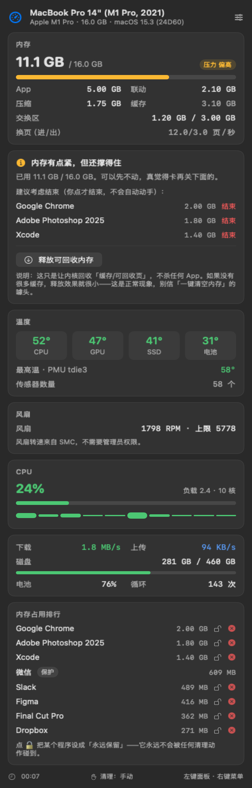
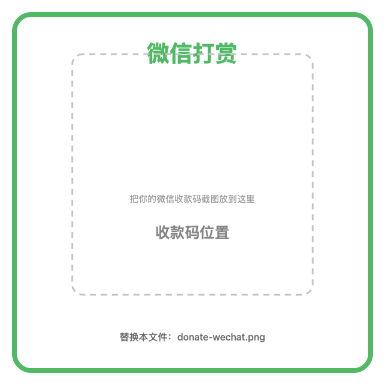

温度、内存压力、CPU、网络、磁盘、电池——抬头一眼就看清。不自动杀进程，不后台联网，安静地待在角落。

紧凑但不含糊，每一项都对应的上「活动监视器」的真实口径
CPU / GPU / SSD / 电池温度，以及全机最高的那个传感器——排查发烫最有用。
不只看占用率，更看压力与换页速度。卡不卡，看这两个才准。
总体占用 + 每核心柱状图 + 系统负载，瞬时压力一目了然。
实时上传 / 下载速率，自动排除虚拟网卡，VPN 环境也不会重复计数。
已用 / 可用空间与占比条，容量告急时一眼可见。
电量、充电状态、循环次数，掌握电池健康。
带风扇的机型（MacBook Pro / mini / Studio / iMac / Mac Pro）自动出现这一栏；MacBook Air 没有风扇，就干脆不显示。
启动时读取你的内存容量与核心数，「大户」判定基准、CPU 上限全部实时计算——8GB 的 Air 和 128GB 的 Studio 用的不是同一套标准。
市面上很多「内存清理」软件，会在后台直接结束你的进程——你可能正挂着微信，它就被关掉了，消息也丢了。PulseBar 的立场是：只告诉你，不动你的手。

所有功能都给你，不锁任何东西。觉得有用，就请我喝杯咖啡。
打赏不改变任何功能。它只代表一件事：
你希望这个小工具被继续维护下去。
专业版不会为了收费硬塞功能。它会等免费版攒够真实反馈之后才做， 而且每个功能都得是「真的会用到」的那种。现有功能不会因为专业版上线而被收回。
这个小工具是跟着用户反馈长出来的。你说要，我就做。
说清你在什么场景下需要它，比什么都管用。
带上机型、macOS 版本和截图，我会快很多。
哪里别扭、哪里看不懂，都欢迎。
这一版专门做了一件事：确保它在任何一台 Apple 芯片的 Mac 上都正常工作，不管有没有风扇、有没有电池、有没有刘海。
不是一套死板界面硬套所有电脑 —— 它会先认出你是什么机器，再决定该显示什么。
M1~M6 及后续机型都能识别，Air、Pro、mini、iMac、Studio、Mac Pro 一份安装包通用，不用挑版本。
菜单栏由系统排版，图标永远不会被刘海挡住。有刘海 / 没刘海表现一致。
文字和背景用系统语义色，跟随你的外观设置自动切换。
菜单栏图标在哪块屏，面板就在哪块屏正确显示。
某个传感器读不到时显示「--」，不会出现 NaN 或空白。
用笔记本 / 台式机 / 大内存 / 无电池四种配置逐一渲染验证过排版。
手动：只在面板显示数据，不发通知、不动进程，最安静。提醒：内存真的紧张时发一条通知，告诉你是谁在占内存，关不关你决定。自动：内存严重紧张时自动结束「后台进程」——有 10 分钟冷却、每次最多 2 个，且永远不会碰你正在用的 App 和前台应用。
专业版一次买断，用授权码激活。激活后完全离线可用，PulseBar 本身不含任何联网代码。（付费渠道与授权方式以正式发布时的说明为准。）
这是 macOS 26 (Tahoe) 的新规则：第三方软件的菜单栏图标需要在系统里单独允许。打开 系统设置 → 菜单栏，在下方列表里找到 PulseBar，把开关打开，图标会立刻出现。软件本身没有任何问题，指标一直在正常采集——PulseBar 自己也会弹窗提醒你去开。
这是因为应用没有经过 Apple 公证（Notarization）。临时办法：右键点 App → 选「打开」→ 再点「打开」。一劳永逸的办法是开发者加入 Apple Developer Program（99 美元/年）做公证，之后所有人双击即可打开。
现在所有功能免费，没有功能锁。以后可能出一个专业版，会加新功能（分页切换 / 整页铺满、历史曲线、隐形大户侦测等），但现有功能不会收回，也不会收费。不想花钱就用免费版，一点都不影响。
不会。PulseBar 不包含任何联网代码，所有数据只在本机读取与显示，也不收集任何使用统计。
目前为 Apple 芯片（M1 及以后，含 M5/M6 等全系列）原生构建，需要 macOS 14 或更高版本。Intel Mac 需要单独构建一个版本。
有用，但没你想的那么大。它调用系统 purge，回收可回收的缓存页；如果你本来就没多少缓存，释放效果会很小——这是正常的。真正让机器变快的方式是关掉占用大的 App。
活动监视器更全更重；PulseBar 更轻、常驻菜单栏、一眼能看到温度和压力。两者互补，不冲突。
金额随意，打赏不改变任何功能。
